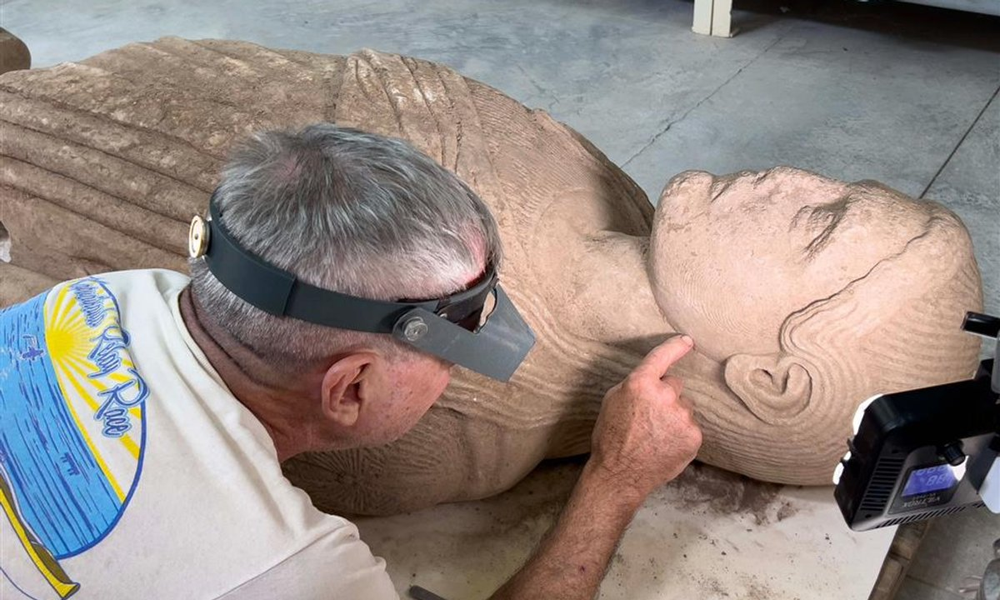

今日一句话总览
本周末的主线不是单一大展，而是**“如何重新解释、重新流通与重新看见文化遗产”**：从萨迪斯巨像、亚马孙雨林地景到《奥德赛》纸草残片，技术、修复与跨馆借展正在改写旧叙事；与此同时，博物馆基础设施、治理权和艺术家的生态责任成为不能回避的制度议题。
信息来源与检索范围
- **检索时间：** 2026-08-10 09:00–09:34（中国标准时间，UTC+8）。
- **覆盖地区：** 北美、欧洲、东亚、南亚、中东、拉丁美洲、大洋洲；本期重点事件涉及美国、英国、法国、意大利、荷兰、土耳其、巴西、智利、韩国、香港、印度、澳大利亚及拉帕努伊。
- **主要来源：** The Art Newspaper、ARTnews、Hyperallergic、Frieze、Art Basel、The Met、Smithsonian、Nature、designboom，以及机构新闻与 Google News RSS 交叉检索。
- **时间范围：** 优先采用过去 24–72 小时（8月7日至10日）发布内容；因8月8日至9日为周末、权威机构更新较少，机构任命、返还、展会及研究类信息扩展至过去7天（8月3日至10日），均在条目中注明。
- **访问失败 / 不确定项：** Artforum、部分机构站点及 Google News 网页端出现超时；ARTnews、The Art Newspaper、Hyperallergic RSS 与文章页可访问。个别展会/机构消息只能由其新闻聚合条目核验，已保留聚合链接，未补写无法确认的细节。澳大利亚博物馆返还报道的原文章链接返回404，因此只作为“明日追踪”，不在正文中陈述细节。本文中的“为什么重要”“可延伸观察”均为编辑解读，并非来源原话。
一、必看头条（4 条）
1. 土耳其萨迪斯出土约2500年前巨型人物雕像
- **地区 / 机构：** 土耳其马尼萨省萨迪斯遗址 / 土耳其文化与旅游部、萨迪斯考古队
- **来源：** The Art Newspaper
- **时间：** 2026-08-07（发现由主管部门于8月4日公布）
- **主题标签：** #考古 #雕塑 #世界遗产 #吕底亚
- **事件摘要：** 雕像分为两段出土，原高约7英尺，表现一名手持果实、长发披肩的年轻男性，年代约为公元前5世纪上半叶。它曾被重新用作罗马时期柱廊街道的铺路石，因此保存良好；服饰与造型同时呈现希腊、安纳托利亚及阿契美尼德时期的交汇特征。
- **为什么重要：** 萨迪斯是目前研究吕底亚文明最关键的城市遗址。作品不是“希腊风格影响东方”的单线故事，而是展示古代跨区域视觉语言如何主动混合，为艺术史教学提供反中心化的案例。
- **可延伸观察：** 等待完整科学出版、颜料或表面残留分析，以及雕像原始陈设环境的判断。
2. 激光雷达在亚马孙雨林下识别逾2万处前殖民地景工程
- **地区 / 机构：** 巴西阿克里州与亚马孙州 / 国际研究团队、《Nature》
- **来源：** The Art Newspaper；Nature研究条目（由报道引用）
- **时间：** 2026-08-06（过去7天）
- **主题标签：** #LiDAR #考古 #亚马孙 #空间文化
- **事件摘要：** 研究团队以超过4400公里的航空测绘结合卫星图像，在林冠下识别出逾2万处土方遗迹；本次研究确认的432处Aquiry相关地景中，仅36处此前有记录。团队估计区域内可能存在2.4万至3万处纪念性地景，相关社会活动范围约18.3万平方公里。
- **为什么重要：** 这直接挑战“亚马孙是几乎无人改造的原始荒野”这一旧框架，也说明遥感图像不是中性的技术图，而是能改变文明史叙述的视觉证据。
- **可延伸观察：** 应避免把复杂原住民社会包装成“失落文明”奇观；后续需关注遗址保护是否会与采伐、道路建设和数据公开发生冲突。
3. 卢浮宫26件伊斯兰艺术珍品将赴史密森尼展出
- **地区 / 机构：** 法国巴黎—美国华盛顿 / 卢浮宫、史密森尼国家亚洲艺术博物馆
- **来源：** The Art Newspaper；Smithsonian官方消息（Google News索引）
- **时间：** 2026-08-05（过去7天）；展期2026-09-26至2027-01-18
- **主题标签：** #伊斯兰艺术 #跨馆借展 #收藏史 #外交礼物
- **事件摘要：** “From the Louvre: Masterpieces of Islamic Art”将汇集7至19世纪、横跨今西班牙至印度的26件作品，包括部分首次在美国展出的器物；华盛顿是唯一一站。策展不仅讨论“杰作”的工艺标准，也追踪器物作为礼物、外交物与欧洲收藏品的迁徙路径。
- **为什么重要：** 展览尝试从伊斯兰语境中的“tuhfa”（珍贵、卓越工艺之物）重新定义“杰作”，而不是只按西方博物馆等级体系来命名。
- **可延伸观察：** 观察展签是否充分说明殖民收藏史、外交交换与原始功能，并让来源地学者参与阐释。
4. 美国机构连续暴露“基础设施即策展条件”问题
- **地区 / 机构：** 美国华盛顿 / 史密森尼学会
- **来源：** ARTnews；NBC Washington：场馆已于8月7日重开
- **时间：** 2026-08-06关闭，2026-08-07重开
- **主题标签：** #博物馆运营 #基础设施 #藏品环境 #公共文化
- **事件摘要：** 国家广场一带7家史密森尼博物馆因冷却系统故障临时关闭，次日恢复开放。事件虽短暂，却显示极端高温时代，空调、湿度控制、能源冗余与观众安全已成为藏品展示的核心系统。
- **为什么重要：** “观众体验”并不始于展陈视觉，而始于建筑维护、气候控制和应急沟通。对小型机构而言，这类隐性成本可能比新展制作更决定生存能力。
- **可延伸观察：** 关注史密森尼是否公布故障原因、藏品风险评估及长期更新预算。
二、最新展览与展讯（8 条）
1. “The Bowery: Devil’s Mile”——用一条街写400年城市视觉史
- **地点 / 机构：** 纽约新美术馆（New Museum）扩建馆舍
- **来源与时间：** Hyperallergic，2026-08-07
- **展期：** 2026-09-24开幕；闭展日来源未见
- **亮点：** 1830年手压消防车、廉价博物馆遗物、Jacob Riis摄影，以及Keith Haring、Lynda Benglis、June Leaf等人的作品并置；从Lenape路径、曼哈顿首个自由黑人聚居地一直讲到酒馆、剧场、朋克与艺术家社区。
- **适合关注：** 城市史策展人、公共史研究者、社区空间运营者。它示范了如何让档案、器物与当代艺术共同构成“街道传记”。
2. “Calder: Rêver en équilibre”——从微型马戏看动态雕塑的起点
- **地点 / 机构：** 巴黎路易威登基金会
- **来源与时间：** designboom，2026-08-08
- **展期：** 2026-04-15至08-16（距闭展约一周）
- **亮点：** 为纪念Calder抵达巴黎100周年，展览从惠特尼借来《Cirque Calder》；微型线材人物兼具玩具、表演和动力装置属性，清楚连接到其后来的悬挂活动雕塑。
- **适合关注：** 雕塑家、表演艺术研究者、儿童与跨媒介教育项目设计者；“游戏”可被视为严肃形式研究，而非展览附属娱乐。
3. “From the Louvre: Masterpieces of Islamic Art”
- **地点 / 机构：** 华盛顿史密森尼国家亚洲艺术博物馆
- **来源与时间：** The Art Newspaper，2026-08-05
- **展期：** 2026-09-26至2027-01-18
- **亮点：** 青铜“蒙松之狮”、奥斯曼陶碗、玉杯、马穆鲁克金属器等，强调器物在礼赠、宗教、宫廷与欧洲收藏间的身份转换。
- **适合关注：** 工艺史、伊斯兰艺术、收藏史与博物馆伦理研究者。
4. “Cézanne to Modigliani: Gifts of Modern Art from the Pearlman Collection”
- **地点 / 机构：** 纽约布鲁克林博物馆，后续巡至MoMA
- **来源与时间：** The Art Newspaper，2026-08-07更新
- **展期：** 布鲁克林站2026-10-02至2027-04-18；MoMA站预计2027年，具体日期待公布
- **亮点：** Pearlman基金会向三家美国博物馆捐赠的63件作品集中亮相，梵高1888年《Tarascon Stagecoach》已归洛杉矶郡立美术馆收藏并将参与巡展。
- **适合关注：** 现代艺术史、收藏与捐赠机制、跨馆共享研究者。
5. 2300年前《奥德赛》纸草残片重新公开展示
- **地点 / 机构：** 纽约大都会艺术博物馆162展厅
- **来源与时间：** Hyperallergic，2026-08-07
- **展期：** 2026-08-05起；结束日期未见
- **亮点：** 残片包含《奥德赛》第20卷的三行文字，被馆方称为现存最早的《奥德赛》片段；其文本与现代版本并不完全一致。
- **适合关注：** 古典学、书籍史、文字与图像传播教育者。可围绕“经典并非固定文本”设计课程。
6. 德·霍赫画中被遮盖士兵以可逆方式“归来”
- **地点 / 机构：** 荷兰海牙莫瑞泰斯皇家美术馆
- **来源与时间：** The Art Newspaper，2026-08-07
- **展期：** 已重新展出；长期陈列期限未见
- **亮点：** 修复师参照华盛顿国家美术馆保存的另一版本，以可逆技法恢复约1658–60年作品中央曾被覆盖的士兵；作品改名为《Figures in a Courtyard》。人物关系从“男女闲饮”变成更明确的饮酒游戏场景。
- **适合关注：** 绘画修复、图像叙事、博物馆伦理从业者；修复不是恢复“原貌”那么简单，而是在可撤销性与解释力度之间做决定。
7. Frieze Seoul 2026公布一批个展式展位
- **地点 / 机构：** 韩国首尔 / Frieze Seoul
- **来源与时间：** Frieze，2026-08-07（Google News索引）
- **展期：** 2026年首尔艺博会期间；本次可访问索引未给出完整日期
- **亮点：** 预告从Karin Kneffel到徐道获（Do Ho Suh）的个人呈现。相比“满墙销售”，个展式展位更利于建立艺术家方法论与空间叙事。
- **适合关注：** 画廊策展、艺术市场观察者；明日应回到展会官网补核完整名单与展位信息。
8. “Your Ghosts Are Mine”在智利呈现卡塔尔及扩展电影实践
- **地点 / 机构：** 智利圣地亚哥Centro Cultural La Moneda / Qatar Museums“Years of Culture”
- **来源与时间：** The Peninsula Qatar，2026-08-06（Google News索引）
- **展期：** 已于本周公布开幕；可访问索引未显示闭展日期
- **亮点：** 以“Expanded Cinemas, Amplified Voices”为副题，让影像艺术成为卡塔尔—智利文化交流的媒介，而非仅把国家文化压缩成传统工艺展示。
- **适合关注：** 影像艺术策展人、跨文化项目与文化外交研究者；具体艺术家名单须等待机构页进一步核验。
三、艺术事件 / 机构动态 / 市场与政策（6 条）
1. 古根海姆阿布扎比任命首任馆长
- **地区 / 机构：** 阿联酋阿布扎比 / Guggenheim Abu Dhabi
- **来源：** The Art Newspaper
- **时间：** 2026-08-05（过去7天）
- **事实：** 现任北卡罗来纳艺术博物馆馆长Valerie Hillings获任该馆首任馆长；她2009至2018年间曾参与这一项目。
- **意义：** 任命意味着长期筹备的机构开始从建筑项目转向收藏、团队与公众计划的实际治理。应继续观察其开馆时间表及全球现代艺术叙事中中东、南亚与非洲的比例。
2. 英国地方博物馆关闭危机获短期援助，但结构问题未解
- **地区 / 机构：** 英国 / 地方与独立博物馆
- **来源：** The Art Newspaper
- **时间：** 2026-08-06（过去7天）
- **事实：** 报道援引研究称，2000至2025年间英国有524家博物馆关闭；Ditchling Museum等小馆虽获彩票基金、行业协会及地方捐助，但人员裁撤与经营模式压力仍在。
- **意义：** 短期项目制资助无法替代核心运营经费。对策展行业而言，“办更多展”可能不是答案，降低建筑、人员与开放时长的不可持续负担更迫切。
3. 劳申伯格基金会出售纽约总部物业
- **地区 / 机构：** 美国纽约 / Robert Rauschenberg Foundation
- **来源：** ARTnews
- **时间：** 2026-08-07
- **事实：** 艺术家生前居住、现为基金会办公地的联排建筑挂牌出售，相邻地块也面临开发；报道提及未来可能转为豪华住宅或精品公寓。
- **意义：** 艺术家遗产管理与城市地产价值发生正面冲突。档案、建筑记忆和运营资金之间如何排序，将影响其他艺术家基金会的资产策略。
4. 奥斯陆馆藏静物被重新归于佛兰德画家Clara Peeters
- **地区 / 机构：** 挪威奥斯陆 / 挪威国家博物馆
- **来源：** ARTnews
- **时间：** 2026-08-07
- **事实：** 馆员Cyntia Osiecki将库房中一件原匿名静物画重新归于Clara Peeters。
- **意义：** “发现”往往并非新出土，而是档案、技术图像与风格比较使库房藏品重新可见；也提醒机构持续检查女性艺术家被匿名化或错误归属的历史。
5. 白宫宴会厅计划被上诉法院裁定缺乏授权
- **地区 / 机构：** 美国华盛顿 / 白宫历史建筑治理
- **来源：** ARTnews
- **时间：** 2026-08-07
- **事实：** 联邦上诉法院裁定，总统无权在未获国会批准的情况下推进白宫宴会厅建设。
- **意义：** 这是建筑设计、历史保护与行政权边界的交叉案例。公共建筑的空间改造不能只以审美偏好或行政效率为依据。
6. Artists Now发布面向艺术家的“绿色宣言”
- **地区 / 机构：** 英国 / Artists Now
- **来源：** The Art Newspaper
- **时间：** 2026-08-07
- **事实：** 由a-n更名而来的艺术家会员组织Artists Now为逾3.6万名会员推出Green Manifesto，定位为让创作实践更环保的行动指南；其倡议同时涉及公平报酬、残障权利与知识产权。
- **意义：** 生态转型若只要求艺术家换材料，容易把制度成本转嫁给个体；把绿色实践与劳动权利、资金和行业游说结合，才可能形成可执行标准。
四、技术、知识与新观念（5 条）
1. The Met上线语义搜索：从“关键词命中”转向“概念接近”
- **来源：** The Metropolitan Museum of Art，2026-08-05（Google News索引）
- **事实：** 大都会博物馆公布“Semantic Search at The Met”，尝试让用户以自然语言和概念关系检索馆藏，而不仅依赖标题、作者与受控词表。
- **启发：** 对数字馆藏而言，AI最有价值的方向之一不是生成替代图像，而是降低陌生观众进入百万级藏品数据库的门槛。需要同步公开偏差评估、数据来源与错误纠正机制。
2. LiDAR把“不可见地景”转成可研究的三维证据
- **来源：** The Art Newspaper，2026-08-06
- **事实：** 激光雷达穿透林冠建立地表高程模型，与卫星图像共同揭示Aquiry社会的道路、沟渠和土方结构。
- **启发：** 展览可把点云、剖面、航测路径与当地口述史并置，避免只展示一张“发现奇迹”的渲染图；视觉化过程本身也应成为可被质询的证据链。
3. 可逆修复成为一种“公开假设”
- **来源：** The Art Newspaper，2026-08-07
- **事实：** 莫瑞泰斯修复师恢复被遮盖士兵时有意降低细节，并采用可逆处理，以适应原作颜料数百年的褪色。
- **启发：** 修复结果不必伪装成唯一真相。数字叠层、可逆材料和展签说明可让观众看到“证据—判断—干预”的完整过程。
4. 触觉纺织品拓展沉浸体验，不再只靠屏幕与头显
- **来源：** Nature：Bistable haptic textiles，2026-08-03（Google News索引）
- **事实：** 新研究讨论双稳态触觉纺织品，用于沉浸式体感增强与感官替代。
- **启发：** 对装置艺术、无障碍展示和表演服装而言，触觉可成为独立的信息通道。但应用前应评估皮肤安全、清洁维护、身体同意与不同感官敏感度。
5. 艺术场馆持续引入DJ，夜间节目正在重写机构身份
- **来源：** Art Basel，2026-08-07（Google News索引）
- **事实：** Art Basel专题追问“为何艺术场馆不断预订DJ”，将音乐夜场视作跨受众运营趋势。
- **启发：** DJ节目不应只是年轻化营销。声学、邻里关系、酒精政策、艺术家报酬及夜间交通都属于策展设计；做得好时，它能把美术馆从“观看容器”转成共同在场的社会空间。
五、今日组合观察
- **考古技术正在改变“文明中心—边缘”地图。** 萨迪斯雕像呈现希腊、安纳托利亚与波斯语汇的混合，亚马孙LiDAR则推翻“稀疏、原始”的旧假设；两者共同要求艺术史从单向影响论转向网络与地景尺度。
- **“修复与再展示”本身就是再写叙事。** 《奥德赛》残片提醒经典文本存在版本差异，德·霍赫画中士兵的恢复改变人物关系，Clara Peeters重新归属则让被埋没的女性作者回到馆藏史。
- **跨馆流通正从明星作品巡展转向“物的履历”。** 卢浮宫—史密森尼借展重点讲礼赠、外交与收藏路径；Pearlman捐赠及跨馆巡展则显示私藏如何转为公共资源。真正值得看的不只是名作，而是所有权与解释权如何变化。
- **博物馆竞争力越来越取决于后台系统。** 史密森尼冷却故障、英国地方馆关闭危机与劳申伯格基金会出售物业共同说明：建筑维护、能源、地产与核心运营经费，往往比展览海报更决定机构能否履行公共使命。
- **数字与沉浸技术正从“制造奇观”转向“改善接近”。** The Met语义搜索帮助非专业用户进入馆藏，触觉纺织品为感官替代提供可能，LiDAR让不可见地景成为证据；评价标准应从“效果炫不炫”转为“谁因此获得理解与参与”。
六、给创作者 / 策展人 / 艺术教育者的启发
- **给创作者：**
- 把“可逆性”作为方法：模块化连接、可拆装材料、版本记录能让作品适应巡展与未来修订。
- 参考Calder的微型马戏，把游戏、表演和机械试验视作完整作品，而非通往“成熟风格”的草稿。
- 使用AI、点云或遥感数据时，保留数据来源、处理参数与不确定区间；图像越有说服力，越要交代它如何被制造。
- 生态实践不要只停留在“再生材料”标签，应把运输、能耗、制作劳动与作品寿命一起纳入预算。
- **给策展人 / 空间运营者：**
- 为每个展览制作一张“后台风险图”：温湿度、冷却冗余、停电、人员、无障碍与夜间交通都应进入策展时间线。
- 借展时增加“物的履历”层：来源、赠与、交易、误认与修复史可以比年代标签更有解释力。
- 城市史展览可学习Bowery项目，以街道为尺度混合地图、消防器、摄影、音乐与艺术作品，并邀请仍生活于当地的社群纠正机构叙事。
- 引入DJ或沉浸项目时，把声音治理、表演者报酬、邻里沟通及安全预案写入策展而非交给活动执行末端。
- **给艺术教育者：**
- 用《奥德赛》残片设计“经典如何形成”课程：让学生比较残片、现代译本、博物馆说明与数字复原。
- 用亚马孙LiDAR案例训练视觉证据素养：区分原始点云、算法处理、推断与媒体叙事。
- 以德·霍赫修复为课堂辩论：恢复被遮盖人物是否合理？什么证据足够？为何必须可逆？
- 将绿色宣言与艺术劳动权利同时讨论，避免把可持续责任道德化地压给资源最少的年轻创作者。
七、今日可收藏链接
- 萨迪斯出土约2500年前巨型雕像 — 古代跨文化造型语言的重要新材料。
- LiDAR揭示亚马孙逾2万处前殖民土方遗迹 — 遥感技术改写地景史的代表案例。
- 卢浮宫伊斯兰艺术珍品赴史密森尼 — 关注“杰作”定义和器物流通史。
- 2300年前《奥德赛》残片在The Met展出 — 经典文本并非单一固定版本。
- New Museum的Bowery街道史展 — 社区史、器物与当代艺术混合策展范例。
- Calder微型马戏回到巴黎 — 理解动态雕塑、游戏与表演关系。
- 德·霍赫作品的可逆修复 — 修复如何直接改变图像叙事。
- 梵高《Tarascon Stagecoach》与Pearlman捐赠巡展 — 私人收藏公共化与跨馆共享案例。
- Clara Peeters作品重新归属 — 库房研究与女性艺术史再发现。
- 英国地方博物馆关闭危机 — 理解小型机构的结构性财务压力。
- Artists Now绿色宣言 — 将生态行动与艺术家职业权益连接。
- 劳申伯格基金会出售纽约总部 — 艺术遗产、地产和机构持续性的冲突。
- 古根海姆阿布扎比首任馆长任命 — 关注新馆治理与开馆进度。
- The Met语义搜索消息 — 自然语言进入大型数字馆藏的新接口。
八、明日追踪建议
- **史密森尼冷却系统后续：** 是否发布故障复盘、藏品环境评估与基础设施更新预算。
- **Frieze Seoul / Kiaf 2026：** 回到两家展会官网核验完整参展名单、日期、亚洲画廊比例及个展式展位安排。
- **Guggenheim Abu Dhabi：** 追踪Valerie Hillings上任后的开馆时间、首展框架、收藏地区分布及本地团队建设。
- **亚马孙Aquiry研究：** 查阅Nature论文全文、数据开放方式，以及巴西、玻利维亚、秘鲁原住民学者和社区的回应。
- **返还与文化遗产：** 继续核验澳大利亚博物馆向拉帕努伊返还祖先遗存的机构公告；因本次报道链接失效，今日不作事实展开。